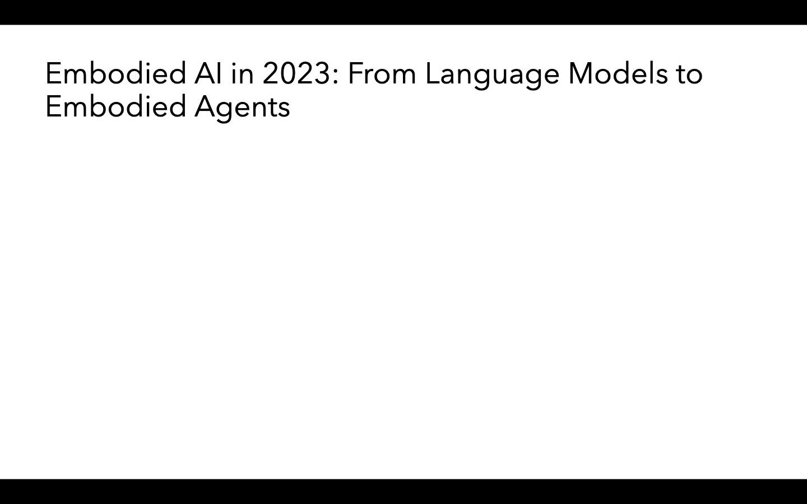

2026-11-01 · 固定六单元开发日程 · 预注册 2dd0efb · 实现 03a2574 · 盲化审阅冻结 5b1538b
淘汰候选，不启动 36 条独立验证；研究 Goal 仍未完成。
变化任务正常完成：候选 0/2，原 Selective Patch 1/2。必需产物全项通过：均 0/2。候选 TF 4.6 对 1.8、PE 7.6 对 6.6，但没有可交付的完整演示。保持任务两组完成 1/1、TF/PE 10；两组摘要均有事实错误，全项通过均 0/1。
这是正常完成与真实质量均未改善的负结果。SP Middle 的“完成”仅满足冻结的 runner 状态定义：返回 stop，却只在正文写出伪工具调用；不能改成成功交付。保留原定义和原分数，同时展示产物判定。
前置 38 次本地合成探测证明：set_page 自动添加页 frontmatter；多页正文须先 load_slidev 拆成记录，再 apply_theme，否则后续页会丢失。候选将精确的三页合成格式与操作顺序追加到变化的 create_bulk_slides 及直接关联的 set_page、load_slidev、apply_theme，共四条知识记录。此行为包含继承限制，不声称都是新漂移；适用边界仅新建单封面项目。
工具元数据、路由和任务要求不变，没有论文事实、任务答案或通用预算指令。235 的两组知识逐字等于 K0。所有知识在执行前审查并冻结。模型 DeepSeek V4.1 Flash 1017、供应商 DigitalOcean 固定；温度 0、每轮 4096 输出 tokens（包含 reasoning）、12 轮、900 秒运行预算、120 秒请求、30 秒工具、原观察截断规则、五个 first-valid judge 保持不变。五个评分不是五次 agent 重复。
共享 PDF URL 提供原始三份论文的相同字节；固定本地 Node/Slidev/dark preset 与 PDF schema 等价转换，沿用上一轮已核验环境。55 项计划输入与 11 项额外冻结文件在本轮结束仍一致。不得将当前结果与旧 NU/FR/课程 27 条混池。
| 匿名 ID | 任务 | 阶段 | 方法 | 执行状态 | TF | PE | 质量全项 |
|---|---|---|---|---|---|---|---|
| D06 | 235 | late | document_sequence | completed | 10 | 10 | False |
| D03 | 457 | late | selective_patch | output_truncated | 2 | 4.4 | False |
| D05 | 457 | middle | selective_patch | completed | 1.6 | 8.8 | False |
| D04 | 457 | late | document_sequence | output_truncated | 1.4 | 7.2 | False |
| D02 | 457 | middle | document_sequence | output_truncated | 7.8 | 8 | False |
| D01 | 235 | late | selective_patch | completed | 10 | 10 | False |
开发门槛事前要求：变化任务完成数和质量全项数均不低于 SP，至少一项严格提高，TF 不降；保持任务完成、质量全项与 TF 不降。本轮完成数更低，因此失败，无选择性追加抽样。
| 匿名 ID | 冻结属性审阅 |
|---|---|
| D06 | charts: pass; summary: fail |
| D03 | persisted_deck: fail; paper_contributions: fail; comparison_future: fail; rendered_design: fail; delivery_truth: fail |
| D05 | persisted_deck: fail; paper_contributions: fail; comparison_future: fail; rendered_design: unknown; delivery_truth: fail |
| D04 | persisted_deck: fail; paper_contributions: fail; comparison_future: fail; rendered_design: unknown; delivery_truth: fail |
| D02 | persisted_deck: fail; paper_contributions: fail; comparison_future: fail; rendered_design: unknown; delivery_truth: fail |
| D01 | charts: pass; summary: fail |
D02（候选 Middle）：实际文件只有默认封面和 Subtitle 占位文字。最后响应在正文中生成 15,469 字符的 DSML 风格 set_page 文本，在 4096 token 上限截断，没有实际工具调用。其 TF 7.8 不能证明已写入完整文件。D04（候选 Late）：三轮后全部 4096 输出 tokens 被供应商计为 reasoning，最终正文为空，没有创建 deck。
D03（SP Late）：真实调用反复修改/重载封面，持久化了嵌套 frontmatter。固定渲染器解析为两页：空白页和白底标题页；第十一轮截断，全部 4096 输出 tokens 被计为 reasoning。D05（SP Middle）：第一轮 stop，正文是 DSML 风格调用文本，实际工具调用数为零。没有修补、重试或把文本当执行结果。
两个保持样本均正确生成三类图表及原数值/单位，但 D06 报全年 24.4M，D01 报 23.4M；真实合计 25.4M。D06 还称只有二月回落，遗漏八月；D01 错报广东品类合计 14.7M（实际 15.8M）并误判与地图总额不一致。保持任务 K0 完全相同，不能将两者文字差异归因于 updater。
全部存在的页面均以原始字节渲染，共三页，截图和 DOM 已保存；外部字体、CDN、封面照片请求在同一捕获调用中阻断，因此不将缺失照片归因于方法。只有封面的完整 dark 设计记 unknown；unknown 不算通过。D03 的空白/白底问题有直接可见证据。首次 IPv4 地址和隐藏布局选择器的渲染重试也保存，未重跑模型。
D03 空白页与标题页：

D02 仅有的默认封面（外部背景阻断）：
56 次请求：24 agent、30 judge、2 preflight；已知费用 $0.070742700，未知费用 0；调度耗时 179.117 秒。知识更新模型调用、tokens、USD 均为 0；逐单元更新时间/请求 tokens/供应商和原五次评分保存在核验 JSON。ECS 对本次局部两阶段日程不定义。
六份产物属性审阅先在 5b1538b 冻结，之后才揭示方法与 TF/PE；同一协调者可从行为推测方法，不是独立人类盲审。本轮仅开发样本，不能作总体显著性或复现成功声明。既有课程、所有旧失败及公共环境修复记录完整保留。
离线复算：python3 results/evidence/document-sequence-pilot-20261101/verify_trial.py。脚本不调用模型，核对 284 个原始文件、138 个源码文件、每条原响应/分数/费用、知识范围、任务和预算一致性及冻结审阅，然后重算门槛。
冻结协议 · 独立复算结果 · 完整原始归档 · 源码快照 · 响应诊断（仅指标，不展示内部推理） · 上一负结果 · 独立的课程报告